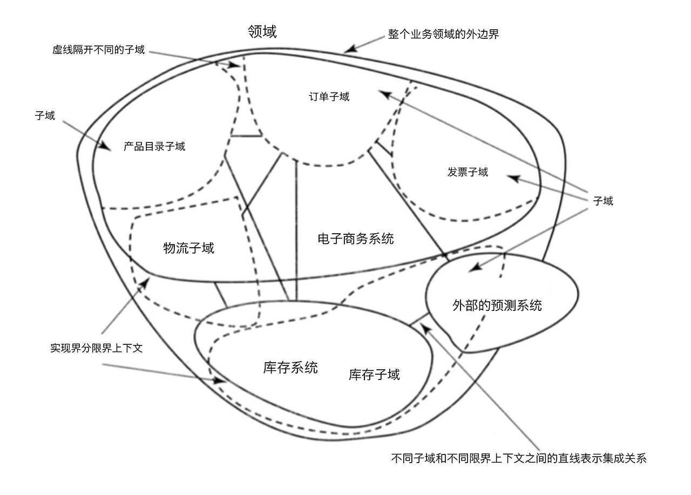
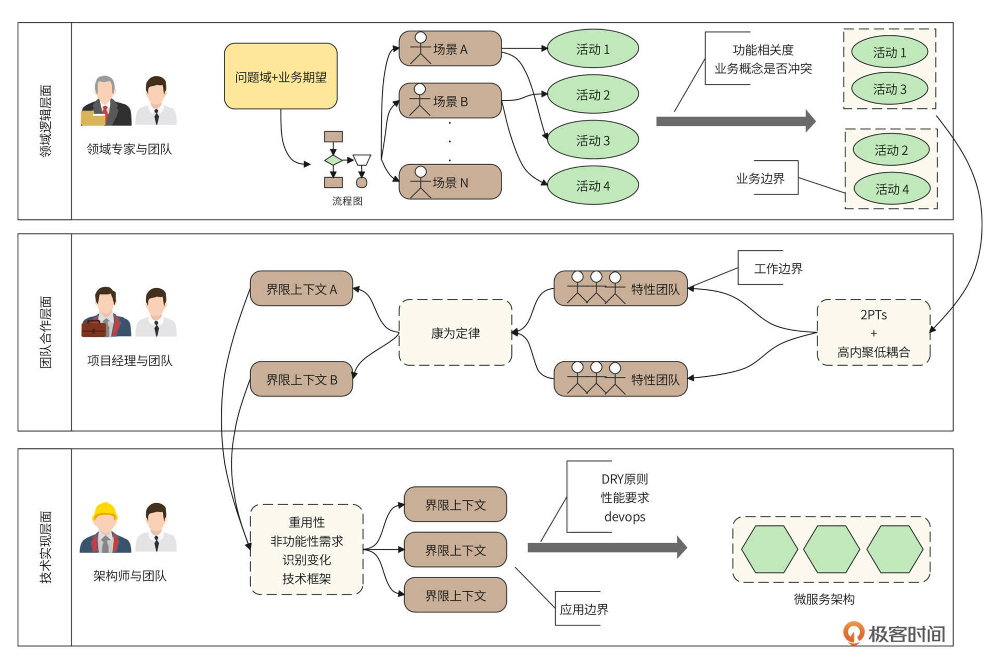
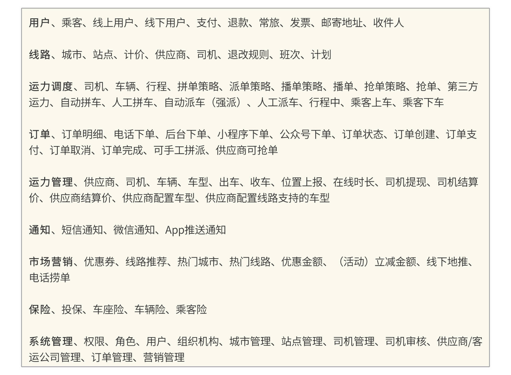
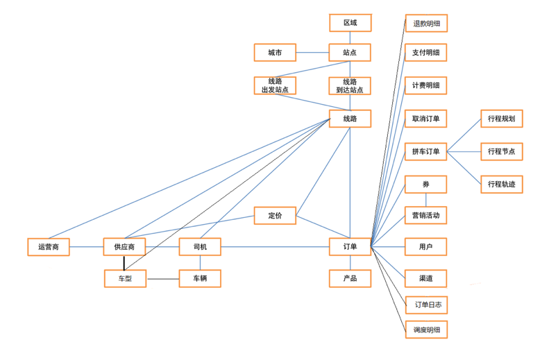
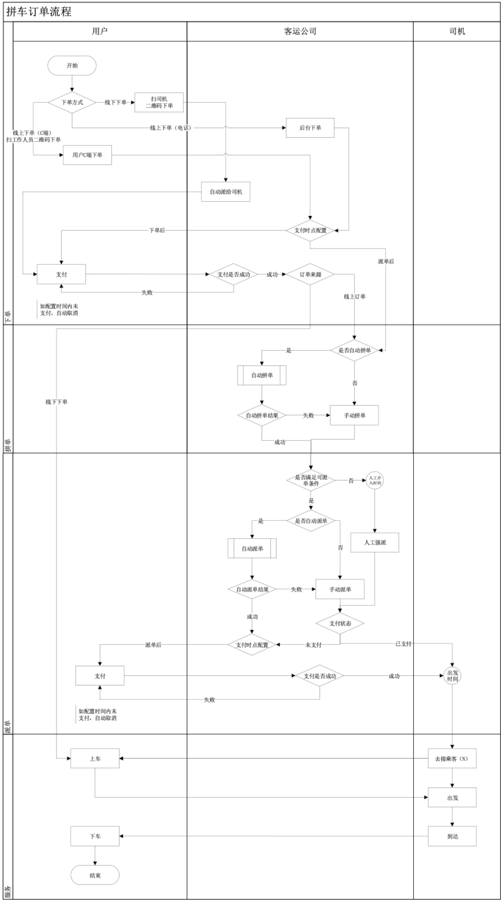
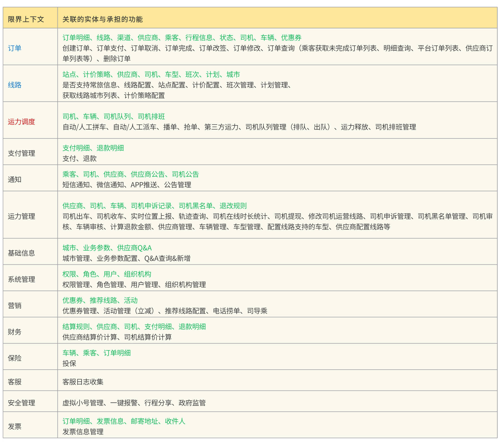
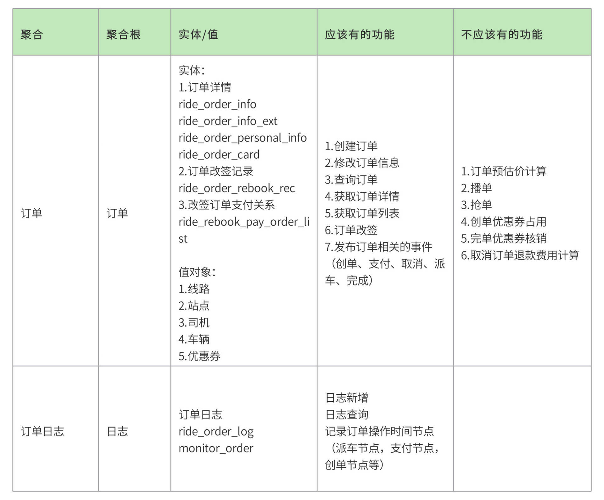
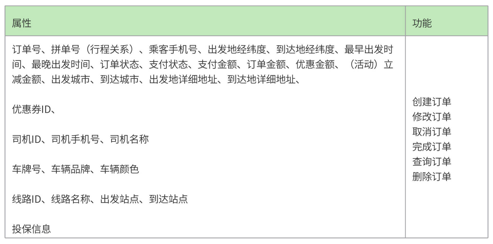
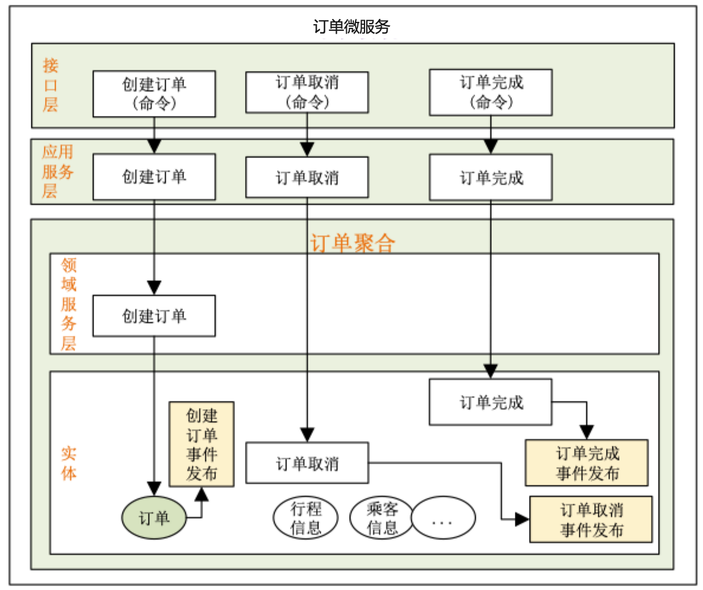

- 00 开篇词 “附身”大厂架构师，身临其境设计高并发系统.md
- 01 软件建模与文档：架构师怎样绘制系统架构蓝图？.md
- 02 高并发架构设计方法：面对高并发，怎么对症下药？.md
- 03 短 URL 生成器设计：百亿短 URL 怎样做到无冲突？.md
- 04 网页爬虫设计：如何下载千亿级网页？.md
- 05 网盘系统设计：万亿 GB 网盘如何实现秒传与限速？.md
- 06 短视频系统设计：如何支持三千万用户同时在线看视频？.md
- 07 海量数据处理技术回顾：为什么分布式会遇到 CAP 难题？.md
- 08 秒杀系统设计：你的系统可以应对万人抢购盛况吗？.md
- 09 交友系统设计：哪种地理空间邻近算法更快？.md
- 10 搜索引擎设计：信息搜索怎么避免大海捞针？.md
- 11 反应式编程框架设计：如何使方法调用无阻塞等待？.md
- 12 高性能架构的三板斧：分析系统性能问题从哪里入手？.md
- 13 微博系统设计：怎么应对热点事件的突发访问压力？.md
- 14 百科应用系统设计：机房被火烧了系统还能访问吗？.md
- 15 限流器设计：如何避免超预期的高并发压力压垮系统？.md
- 16 高可用架构的十种武器：怎么度量系统的可用性？.md
- 17 Web 应用防火墙：怎样拦截恶意用户的非法请求？.md
- 18 加解密服务平台：如何让敏感数据存储与传输更安全？.md
- 19 许可型区块链重构：无中心的区块链怎么做到可信任？.md
- 20 网约车系统设计：怎样设计一个日赚 5 亿的网约车系统？.md
- 21 网约车系统重构：如何用 DDD 重构网约车系统设计？.md
- 22 大数据平台设计：如何用数据为用户创造价值？.md
- 结束语 一个架构师的一天.md
21 网约车系统重构：如何用 DDD 重构网约车系统设计？
你好，我是李智慧。
软件开发是一个过程，这个过程中相关方对软件系统的认知会不断改变。当系统现状和大家的认知有严重冲突的时候，不重构系统就难以继续开发下去。此外，在持续的需求迭代过程中，代码本身会逐渐腐坏，变得僵硬、脆弱、难以维护，需求开发周期越来越长，bug却越来越多，系统也必须要进行重构。
我们在前一篇讨论的Udi网约车系统经过了几年的快速发展，随着业务越来越复杂，功能模块越来越多，开发团队越来越庞大，整个系统也越来越笨拙、难以维护。以前两三天就能开发完成的新功能，现在要几个星期，开发人员多了，工作效率却下降了。
Udi使用微服务架构，开始的时候业务比较简单，几个微服务就可以搞定。后面随着功能越来越多，微服务也越来越多，微服务之间的依赖关系也变得越来越复杂，常常要开发一个小功能，却需要在好几个微服务中进行修改。后来开发人员为了避免这种复杂性，倾向于把所有功能都写在一个微服务里，结果整个系统架构又开始退回到单体架构。
基于以上原因，我们准备对Udi进行一次重构，核心就是要解决微服务设计的混乱，梳理、重构出更加清晰的微服务边界和微服务之间的依赖关系。我们准备使用DDD，即领域驱动设计的方法进行这次重构。
那么，领域驱动设计的核心思想是什么？设计的一般方法是什么？如何将这些方法应用到Udi的重构过程中？这些就是我们今天要解决的主要问题。
DDD的一般方法
领域是一个组织所做的事情以及其包含的一切，通俗地说，就是组织的业务范围和做事方式，也是软件开发的目标范围。比如对于淘宝这样一个以电子商务为主要业务的组织，C2C电子商务就是它的领域。领域驱动设计就是从领域出发，分析领域内模型及其关系，进而设计软件系统的方法。
但是如果我们说要对C2C电子商务这个领域进行建模设计，那么这个范围就太大了，不知道该如何下手。所以通常的做法是把整个领域拆分成多个子域，比如用户、商品、订单、库存、物流、发票等。强相关的多个子域组成一个限界上下文，它是对业务领域范围的描述，对于系统实现而言，限界上下文相当于是一个子系统或者一个模块。限界上下文和子域共同组成组织的领域，如下：

不同的限界上下文，也就是不同的子系统或者模块之间会有各种的交互合作。如何设计这些交互合作呢？DDD使用上下文映射图来完成，如下：
在DDD中，领域模型对象也被称为实体。先通过业务分析，识别出实体对象，然后通过相关的业务逻辑，设计实体的属性和方法。而限界上下文和上下文映射图则是微服务设计的关键，通常在实践中，限界上下文被设计为微服务，而上下文映射图就是微服务之间的依赖关系。具体设计过程如下图：

首先，领域专家和团队一起讨论分析业务领域，确认业务期望，将业务分解成若干个业务场景。然后，针对每个场景画UML活动图，活动图中包含泳道，通过高内聚原则对功能逻辑不断调整，使功能和泳道之间的归属关系变得更加清晰合理。这些泳道最终就是限界上下文，泳道内的功能就是将来微服务的功能边界，泳道之间的调用流程关系，就是将来微服务之间的依赖关系，即上下文映射图。
但是，这个状态的泳道还不能直接转化成限界上下文。有些限界上下文可能会很大，有些依赖关系可能会比较强。而一个限界上下文不应该超过一个团队的职责范围，因为根据康威定律：组织架构决定系统架构，两个团队维护一个微服务，必然会将这个微服务搞成事实上的两个微服务。所以，我们还需要根据团队特性、过往的工作职责、技能经验，重新对泳道图进行调整，使其符合团队的职责划分，这时候才得到限界上下文。
在这个限界上下文基础上，考虑技术框架、非功能需求、服务重用性等因素，进一步进行调整，就得到最终的限界上下文设计，形成我们的微服务架构设计。
我们将遵循上述DDD方法过程对Udi微服务进行重新分析设计，并进行系统重构。
Udi DDD 重构设计
首先分析我们的业务领域，通过头脑/事件风暴的形式，收集领域内的所有事件/命令，并识别事件/命令的发起方即对应的实体。最后识别出来的实体以及相关活动如下表：

基于核心实体模型，绘制实体关系图，如下：

在实体间关系明确且完整的前提下，我们就可以针对各个业务场景，绘制场景活动图。活动图比较多，这里仅用拼车场景作为示例，如下：

依据各种重要场景的活动图，参考团队职责范围，结合微服务重用性考虑及非功能需求，产生限界上下文如下表：

针对每个限界上下文进一步设计其内部的聚合、聚合根、实体、值对象、功能边界。以订单限界上下文为例：

上述订单实体的属性和功能如下表：

最后，在实现层面，设计对应的微服务架构如下图：

这是一个基于领域模型的分层架构，最下层为聚合根对象，组合实体与值对象，完成核心业务逻辑处理。上面一层为领域服务层，主要调用聚合根对象完成订单子域的业务，根据业务情况，也会在这一层和其他微服务通信，完成更复杂的、超出当前实体职责的业务，所以这一层也是一个聚合层。
再上面一层是应用服务层，将实体的功能封装成各种服务，供各种应用场景调用。而最上面是一个接口层，提供微服务调用接口。
小结
领域驱动设计很多时候雷声大，雨点小，说起来各种术语满天飞，真正开发实践的时候又无从下手。这节的案例来自一个真实落地的DDD重构设计文档，你可以参考这个文档，按图索骥，应用到自己的开发实践中。
既然说到“按图索骥”，那我认为也有必要在这一节的最后，帮你画一个更有概括性的DDD重构路线图，我们把使用DDD进行系统重构的过程分为以下六步：
- 讨论当前系统存在的问题，发现问题背后的根源。比如：架构与代码混乱，需求迭代困难，部署麻烦，bug率逐渐升高；微服务边界不清晰，调用依赖关系复杂，团队职责混乱。
- 针对问题分析具体原因。比如：微服务 A 太庞大，微服务B和C职责不清，团队内业务理解不一致，内部代码设计不良，硬编码和耦合太多。
- 重新梳理业务流程，明确业务术语，进行DDD战略设计，具体又可以分为三步。- a. 进行头脑风暴，分析业务现状和期望，构建领域语言；- b. 画泳道活动图、结合团队特性设计限界上下文；- c. 根据架构方案和非功能需求确定微服务设计。
- 针对当前系统实现和DDD设计不匹配的地方，设计微服务重构方案。比如：哪些微服务需要重新开发，哪些微服务的功能需要从A调整到B，哪些微服务需要分拆。
- DDD技术验证。针对比较重要、问题比较多的微服务进行重构打样，设计聚合根、实体、值对象，重构关键代码，验证设计是否合理以及团队能否驾驭DDD。
- 任务分解与持续重构。在尽量不影响业务迭代的前提下，按照重构方案，将重构开发和业务迭代有机融合。
思考题
你认为DDD最大的价值是什么？如何才能成功落地DDD？
© 2019 - 2023 Liangliang Lee. Powered by gin and hexo-theme-book.